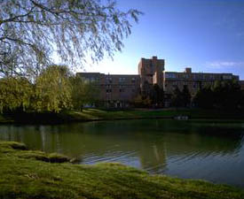

National Center for Geographic Information and Analysis
Home
About
Goals
Research
People
Events
Resources
History
Contact
EVENTS
NCGIA - Buffalo manages the Buffalo portion of the national center, supports a range of research grants and programs, and coordinates GI Science activities on campus.
Events
NIH Webinar
March 7, 2014 1:00-4:00pm
NCGIA Webinar
NCGIA Research Webinar Series in Fall, 2013
Consortium Meeting at NCGIA-Maine
August, 2013
Environmental Landscape Conference
David Mark (invalid link)
International Conference of Geo-Process Modeling in VGE
November 6-8, 2014 at HK
